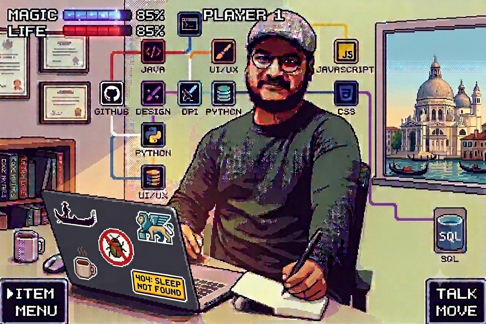

- Operated Oracle OPERA PMS and OPERA Cloud daily for reservations, rate and availability management, and guest profiles — processing bookings from direct, GDS and OTA channels.
- Played a hands-on role in the property's legacy-to-cloud PMS migration: configured system settings, mapped and reconciled reservation data between platforms, built Excel trackers to monitor transfer progress, and authored go-live documentation.
- Monitored reservation and availability flows to catch discrepancies early and help prevent overbooking and rate misalignment across channels.
- Acted as multilingual point of contact (IT/EN/ES/PT) for guests and partners, handling escalations and time-sensitive requests.
- Trained new front-desk staff on systems, workflows and service protocols.
Prompt Engineer · Computational Linguist · Multilingual AI Developer
AI & NLP Engineer
Based in Venice, Italy
See My Projects
About Me
01ABOUT
Prompt Engineer and NLP specialist with hands-on experience at TELUS International and Appen, combined with an MSc in Computational Linguistics (LLM track) at Ca' Foscari University, Venice. Fluent in four languages and skilled across the full AI/NLP stack — from model fine-tuning and prompt optimization to multilingual content strategy and LLM deployment.
I bring a rare combination of technical depth, linguistic expertise, instructional design, and domain knowledge in hospitality technology. Equally comfortable building and evaluating AI systems as writing the documentation, curriculum, or content that surrounds them.
Experience
02EXPERIENCE
Front Desk & Hospitality Systems
Dec 2023 – Jun 2026
Hotel Maggior Consiglio / Leonardo Royal Hotel Venice · Venice / Mestre, Italy
Web Content Specialist
Mar 2023 – Nov 2023
Dev4Side Software · Milan, Italy
- Automated content publishing and performance tracking via CMS and analytics API integrations, gaining hands-on exposure to REST API workflows.
Language Specialist / Web Translator
Dec 2022 – Nov 2023
Università Ca' Foscari Venezia · Venice, Italy
- Post-edited machine-translated institutional content across EN/ES/IT, systematically validating and correcting AI-generated output for accuracy, terminology, and contextual fit.
- Maintained terminological consistency across academic and administrative domains — a discipline directly relevant to prompt engineering and multilingual output quality control.
Prompt Engineer / AI Language Consultant
Nov 2020 – Nov 2021
Appen · UK (Remote)
- Designed and evaluated multilingual (EN/ES/IT) training datasets and prompt structures, building an early foundation in structured prompt engineering across languages.
- Delivered structured feedback loops to improve model coherence and factual accuracy — the same evaluation discipline used to validate RAG and agentic system outputs.
Prompt Engineer
Jan 2018 – Sep 2020
TELUS International · Belgium (Remote)
- Designed, tested, and iteratively refined prompt structures across multiple language models to improve output accuracy and relevance — directly applicable to prompt engineering and output validation for enterprise GenAI systems.
- Collaborated with cross-functional ML and engineering teams on NLP pipeline development, gaining early exposure to production data workflows comparable to RAG data preparation and platform integration.
- Owned data preprocessing and quality control, foundational to the testing/validation discipline required for reliable AI outputs.
Creative Copy / UX Writer & Instructional Designer
Oct 2014 – Nov 2017
Nubank / TheGamer · Infosys · Remote
- Produced UX copy, marketing campaigns and learning content at scale for a leading fintech and media brands.
- Built e-learning and revenue enablement programmes at Infosys.
Core Competencies
03SKILLS
AI & NLP Engineering
- Prompt Engineering & Optimization
- LLM Fine-tuning (LoRA / RLHF)
- NLP Pipeline Development
- HuggingFace / Transformers
- NLTK · SpaCy · OpenAI API
- TensorFlow · PyTorch
- Python · SQL
Language & Content
- Multilingual NLP (EN / ES / IT / PT)
- UX Writing & Copywriting
- SEO / SEA Content Strategy
- Web Translation & Localisation
- Technical Documentation
- Instructional Design (e-learning)
Domain & Tools
- Oracle OPERA PMS / Cloud
- Hospitality IT Operations
- ETL Pipeline Concepts
- Google Analytics / ADS
- Slack · Trello · Office 365
- JavaScript / TypeScript (basic)
04NEXT STEPS
Want to see what I build?
I work on AI systems, NLP tools, and multilingual applications. Take a look at my projects.
View Projects